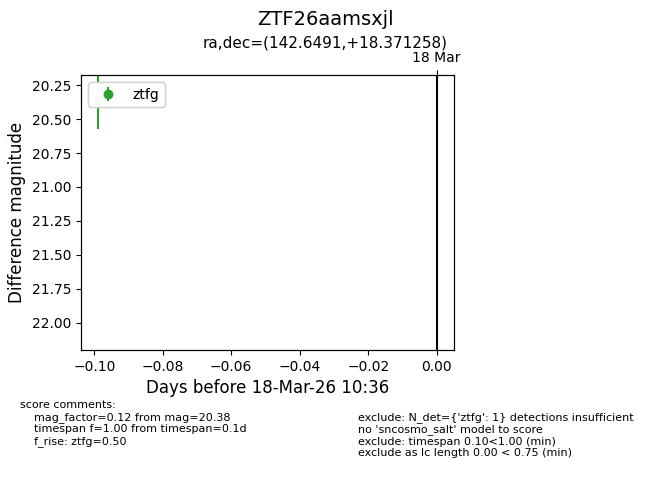
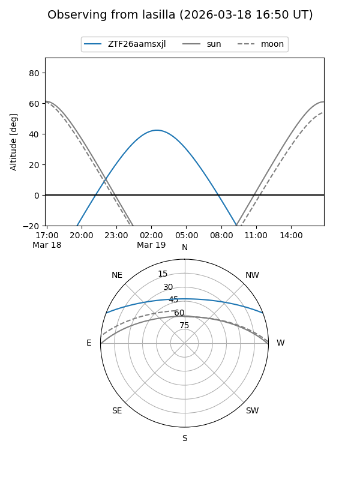
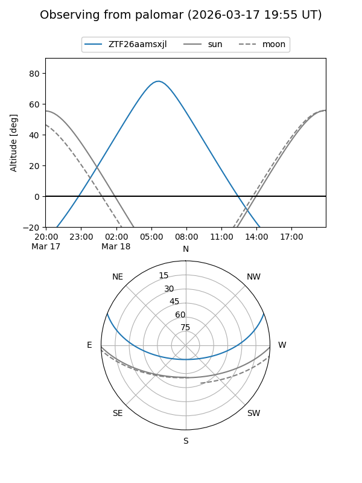

ZTF26aamsxjl
Target ZTF26aamsxjl at 2026-03-18 10:38
Aliases and brokers:
FINK: link
Lasair: link
ALeRCE: link
alt names
ZTF26aamsxjl (ztf,fink_ztf)
Coordinates:
equatorial (ra, dec) = 142.6491,+18.37126
equatorial (HMS+DMS) = 09:30:35.79,+18:22:16.53
galactic (l, b) = (212.6525,+43.17681)
Flags:
Photometry:
last ztfg=20.38
1 ztfg detections
Lightcurve

Visibility


Additional plots